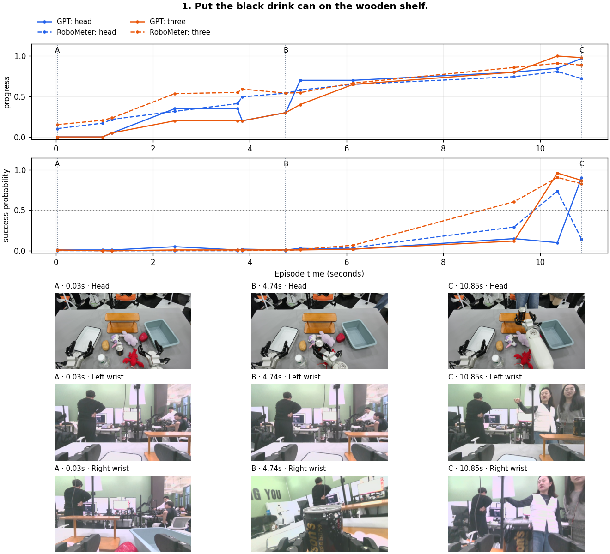
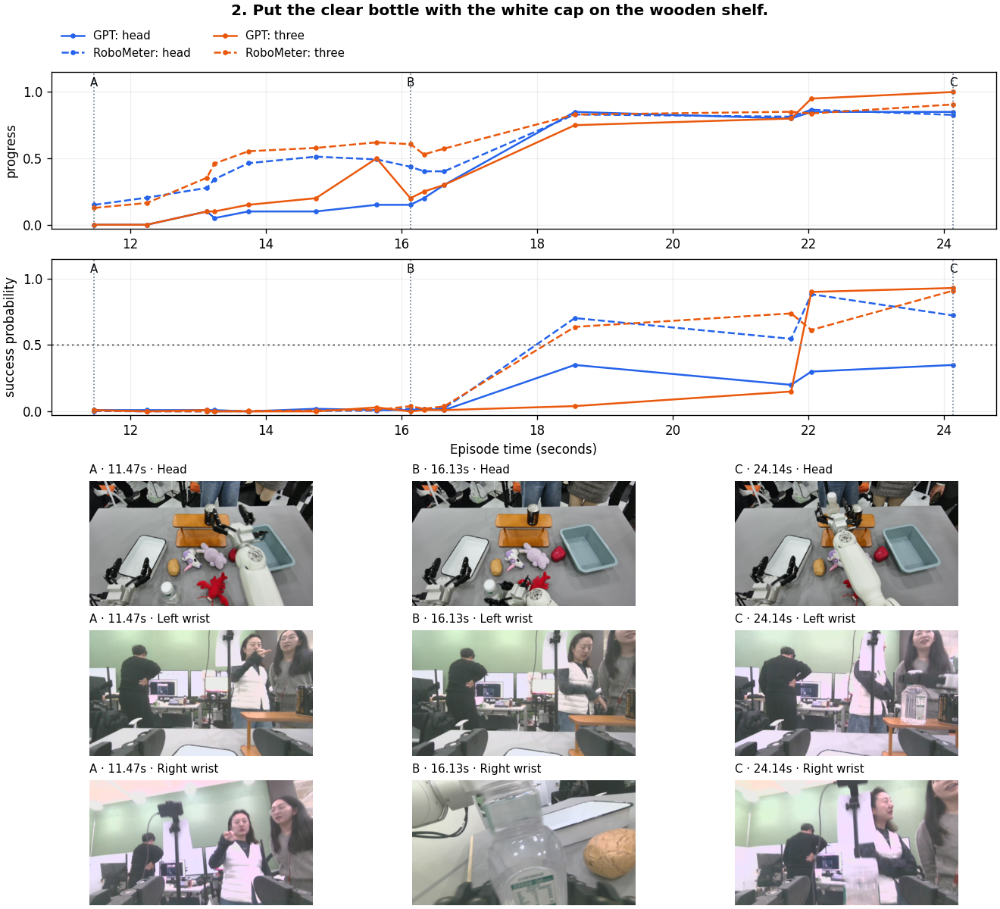
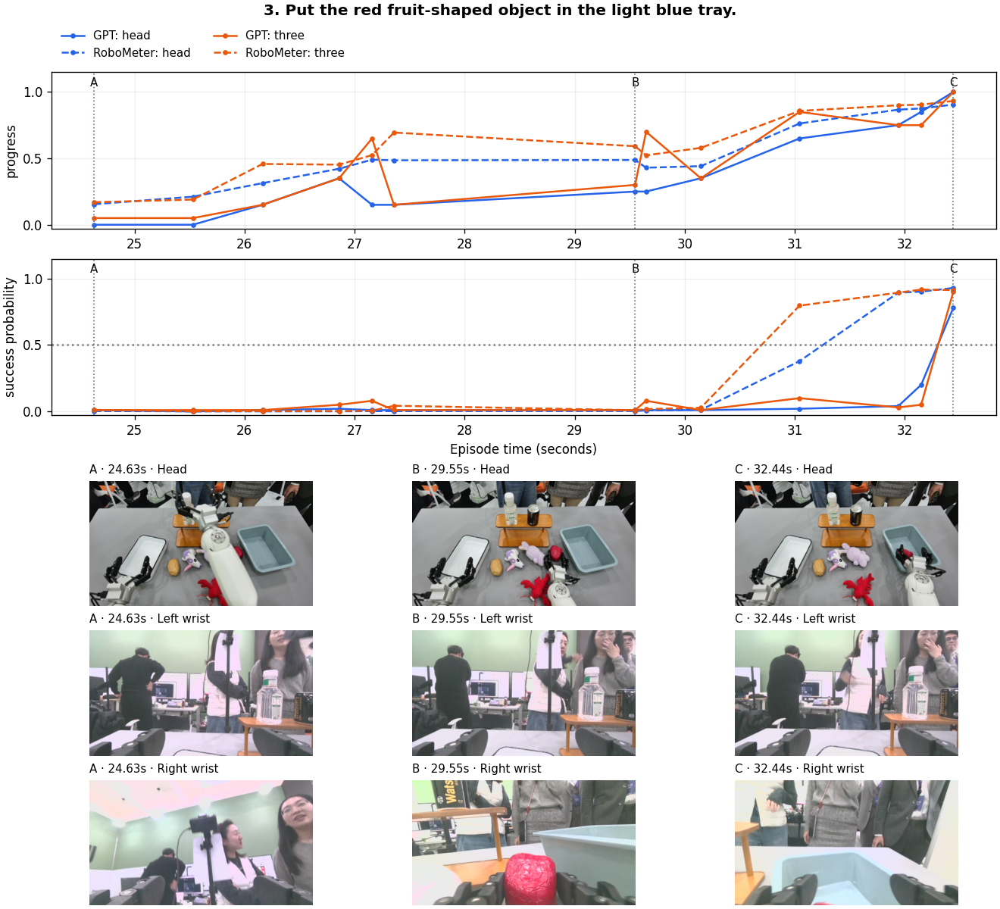
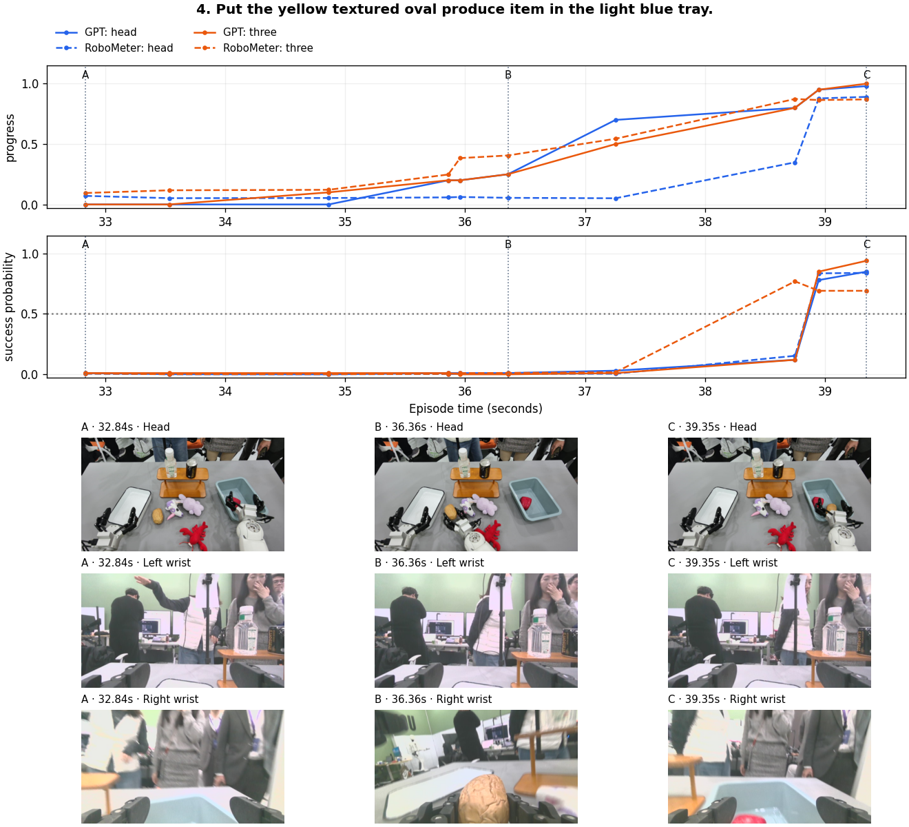
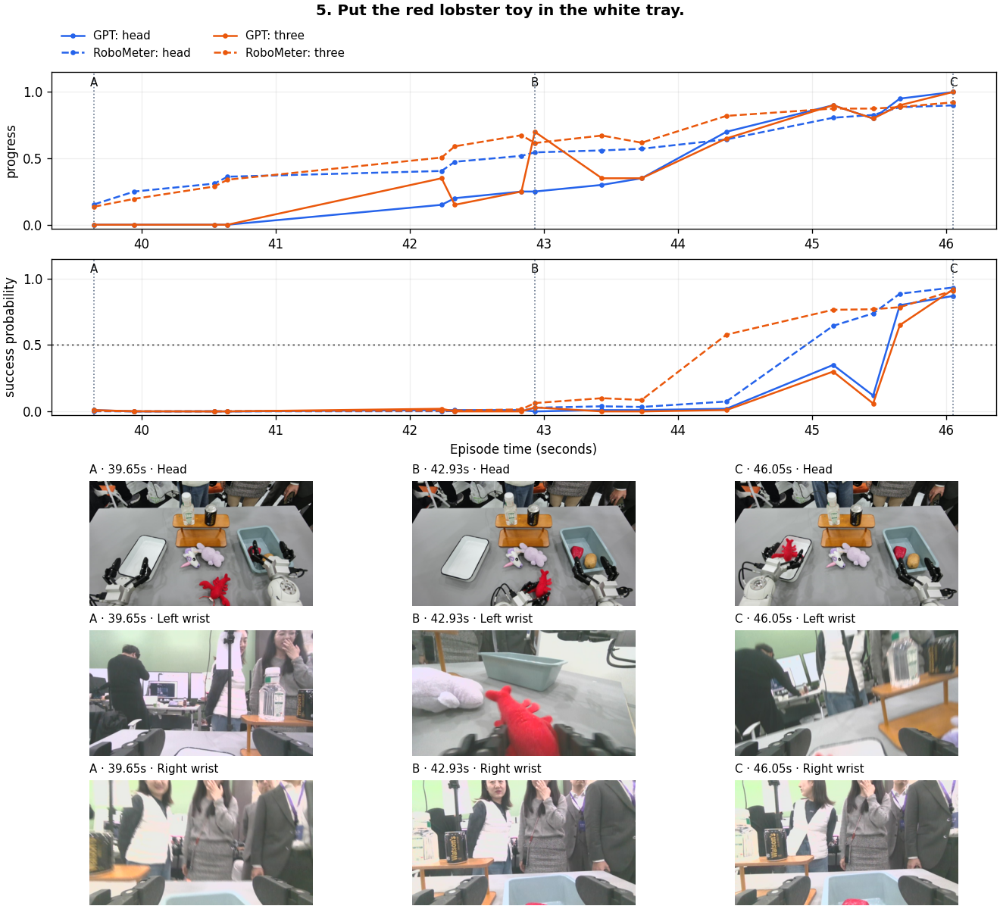
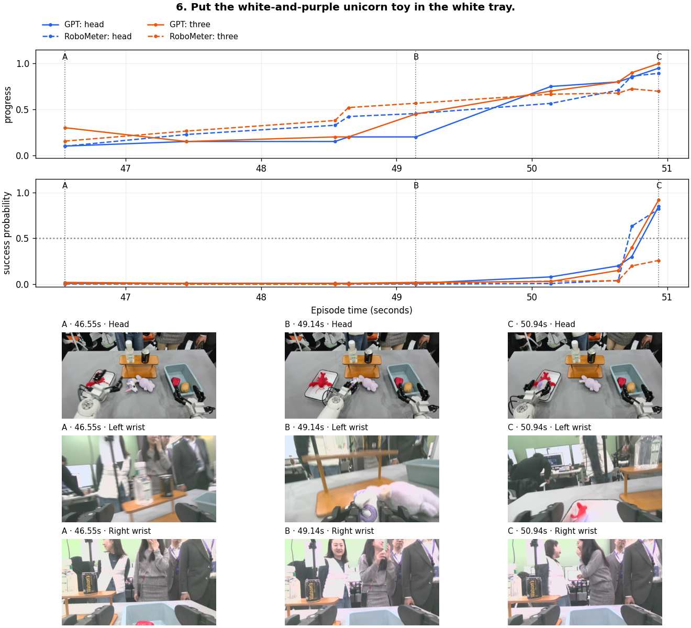
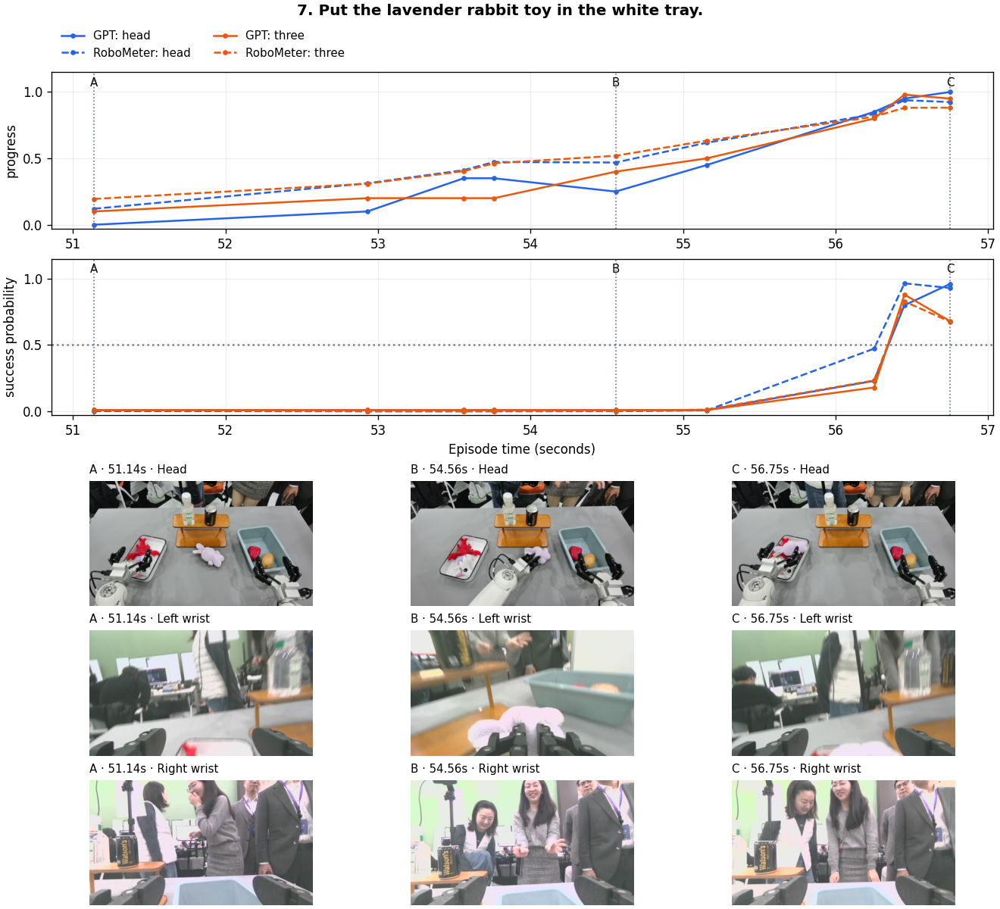
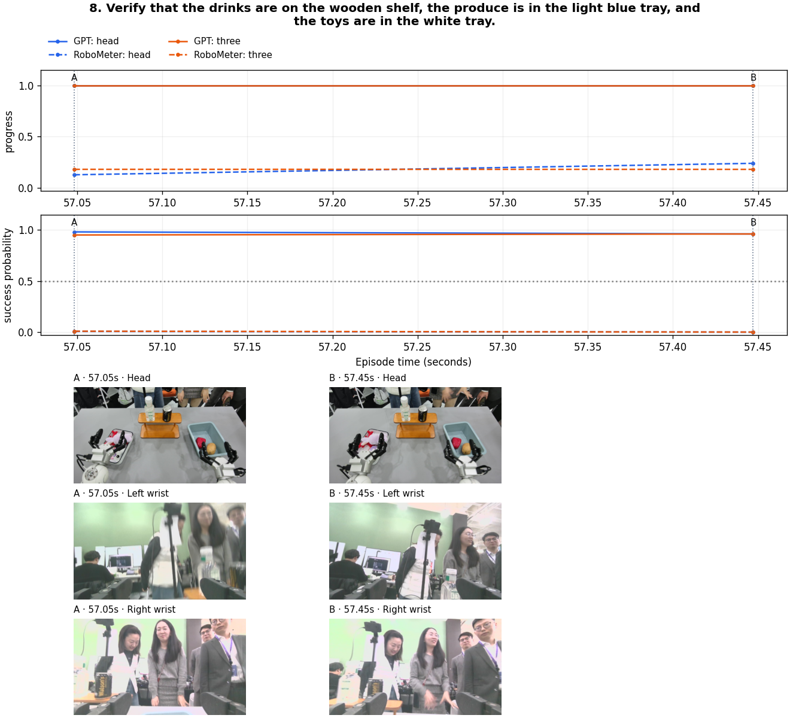

Run coverage: 914/914 camera/time-step judgments. GPT independently scored the same selected histories, without RoboMeter scores. GPT scores and probability estimates are not human ground truth or calibrated probabilities. Agreement does not establish accuracy. Three-camera images use horizontal tiles.
Complete: 168/168 judgments across 84 selected times. Blue: head only; orange: three cameras. Solid: GPT; dashed: RoboMeter. A/B/C match the image columns. Null GPT scores are gaps, not zero.

| Camera input | GPT final progress / success | RoboMeter at same time | GPT final evidence |
|---|---|---|---|
| head · 10.85s | 0.970 / 0.900 | 0.722 / 0.145 | The black drink can is upright on the wooden shelf's upper surface. The gripper has opened around it, indicating release, though it remains nearby and longer-term stability is not shown. |
| three · 10.85s | 0.980 / 0.870 | 0.888 / 0.828 | The black drink can is visibly upright on the upper surface of the wooden shelf in the final overhead view. The gripper is nearby and partially occludes the base, so release and stability are slightly uncertain. |
Source annotation review notes: Task boundary: confirm release and next target in the original head/wrist images.
| Time / camera input | Progress / success | Status and evidence |
|---|---|---|
| 0.03s / head | 0.000 / 0.010 | not_success: The black drink can stands on the tabletop in front of the wooden shelf. Neither gripper holds it, and the shelf is empty. |
| 0.03s / three | 0.000 / 0.010 | not_success: The black drink can is upright on the tabletop in front of the wooden shelf. The shelf is empty, and neither gripper is holding the can. |
| 0.96s / head | 0.000 / 0.010 | not_success: The black drink can remains upright on the table in front of the wooden shelf. Both grippers are away from the can, and the shelf is empty; no grasp or placement is visible. |
| 0.96s / three | 0.000 / 0.000 | not_success: The black drink can is still visibly on the tabletop below the wooden shelf; it has not been placed on the shelf. |
| 1.16s / head | 0.050 / 0.010 | not_success: The black drink can remains visibly on the tabletop below the wooden shelf, with no visible grasp, lift, or placement on the shelf. The robot grippers are nearby but do not visibly hold the can. |
| 1.16s / three | 0.050 / 0.000 | not_success: The right gripper has moved toward the black can, but the can remains upright on the tabletop in front of the wooden shelf. No grasp, lift, or shelf placement is visible. |
| 2.45s / head | 0.350 / 0.050 | not_success: The black drink can appears to be grasped or partially occluded near the lower-right gripper, while the wooden shelf remains visibly empty. Placement and release on the shelf are not shown. |
| 2.45s / three | 0.200 / 0.010 | not_success: The right gripper has approached and partly surrounds the black can, which remains upright on the tabletop. A secure grasp is unclear; no lift, transfer, or placement on the wooden shelf is visible. |
| 3.75s / head | 0.350 / 0.010 | not_success: The black can appears to be grasped or approached by the robot gripper near the lower center, but it is clearly not on the wooden shelf, and the gripper still obscures it. |
| 3.75s / three | 0.200 / 0.010 | not_success: The right gripper is positioned around the black drink can near its original tabletop location. A secure grasp or lift is not clearly established, and the wooden shelf remains empty; no placement or release is visible. |
| 3.85s / head | 0.200 / 0.020 | not_success: The black drink can is still near the lower center, apparently being approached or grasped by the robot gripper. The wooden shelf remains empty, so placement and release are not visible. |
| 3.85s / three | 0.200 / 0.010 | not_success: The right gripper is positioned around the black can near its original tabletop location. A secure grasp or lift is not clearly established; the can has not reached the wooden shelf, and no release or stable placement is visible. |
| 4.74s / head | 0.300 / 0.010 | not_success: The right gripper appears to hold and slightly lift the black drink can near its original position. The wooden shelf remains empty; no placement or release onto it is visible. |
| 4.74s / three | 0.300 / 0.010 | not_success: The right gripper holds the black drink can and appears to have begun lifting it. The can remains in front of the wooden shelf; no placement on the shelf or release is visible. |
| 5.04s / head | 0.700 / 0.030 | not_success: The black drink can is visibly held by the robot gripper in front of the wooden shelf, but it has not been released or shown stably placed on the shelf. |
| 5.04s / three | 0.400 / 0.010 | not_success: The right gripper has grasped and lifted the black drink can toward the wooden shelf. The can remains held in front of the shelf; no release or stable placement on the shelf is visible. |
| 6.14s / head | 0.700 / 0.020 | not_success: The right gripper has lifted the black drink can and moved it above the wooden shelf. The can remains held; release and stable placement on the shelf are not visible. |
| 6.14s / three | 0.650 / 0.020 | not_success: The right gripper has lifted the black drink can and moved it above the wooden shelf area. At the last snapshot the can remains held between the fingers; release and stable placement on the shelf are not visible. |
| 9.46s / head | 0.800 / 0.150 | not_success: The robot has lifted the black can and positioned it upright at the wooden shelf's upper tier. The gripper still surrounds the can, and its base is partly obscured; release and stable placement are not visible. |
| 9.46s / three | 0.800 / 0.120 | not_success: The robot has lifted the black drink can and positioned it upright at the wooden shelf's upper surface. The gripper still surrounds the can; release and stable unsupported placement are not visible. |
| 10.36s / head | 0.850 / 0.100 | not_success: The black can is visibly held upright by the gripper above the wooden shelf, but the gripper remains engaged and the can is not visibly released or stably resting on the shelf. |
| 10.36s / three | 1.000 / 0.960 | success: The black drink can is upright on the wooden shelf's upper surface. The gripper has opened around it, and the can appears supported by the shelf, though prolonged stability is not shown. |
| 10.85s / head | 0.970 / 0.900 | success: The black drink can is upright on the wooden shelf's upper surface. The gripper has opened around it, indicating release, though it remains nearby and longer-term stability is not shown. |
| 10.85s / three | 0.980 / 0.870 | success: The black drink can is visibly upright on the upper surface of the wooden shelf in the final overhead view. The gripper is nearby and partially occludes the base, so release and stability are slightly uncertain. |

| Camera input | GPT final progress / success | RoboMeter at same time | GPT final evidence |
|---|---|---|---|
| head · 24.14s | 0.850 / 0.350 | 0.827 / 0.723 | The clear white-capped bottle has been lifted and moved upright over the wooden shelf beside the can. The gripper remains around its lower portion, obscuring the base; release and stable support on the shelf are not clearly visible. |
| three · 24.14s | 1.000 / 0.930 | 0.906 / 0.910 | The clear bottle with the white cap is upright on the wooden shelf beside the black can. The gripper appears open and lifted away from the bottle, indicating release; only a brief final view confirms placement. |
Source annotation review notes: Task boundary: confirm release and next target in the original head/wrist images.
| Time / camera input | Progress / success | Status and evidence |
|---|---|---|
| 11.47s / head | 0.000 / 0.010 | not_success: The clear bottle with the white cap is upright on the table in the foreground, separate from the wooden shelf. No grasp or placement of the bottle is visible. |
| 11.47s / three | 0.000 / 0.010 | not_success: The clear bottle with a white cap is standing on the tabletop in front of the wooden shelf. It is not grasped or placed on the shelf. |
| 12.25s / head | 0.000 / 0.010 | not_success: The clear bottle with the white cap remains upright on the tabletop in the foreground, away from the wooden shelf. Neither gripper holds it; a different dark container is on the shelf. |
| 12.25s / three | 0.000 / 0.000 | not_success: The clear bottle with the white cap remains upright on the table in front of the wooden shelf. Neither gripper holds it, and no bottle placement on the shelf is visible. |
| 13.13s / head | 0.100 / 0.010 | not_success: The clear white-capped bottle remains upright on the table in front of the wooden shelf. The right gripper is approaching but has not visibly grasped or lifted it; only a dark can is on the shelf. |
| 13.13s / three | 0.100 / 0.010 | not_success: The clear bottle with the white cap remains upright on the tabletop in front of the wooden shelf. The gripper is approaching it, but no grasp, lift, or placement on the shelf is visible. |
| 13.24s / head | 0.050 / 0.010 | not_success: The clear bottle with a white cap is visibly still on the tabletop at the lower left, while the wooden shelf holds a black can; the bottle has not been placed on the shelf. |
| 13.24s / three | 0.100 / 0.000 | not_success: The clear bottle with the white cap remains upright on the tabletop in front of the wooden shelf. The right gripper has approached it, but no grasp, lift, or placement on the shelf is visible. |
| 13.74s / head | 0.100 / 0.000 | not_success: The clear white-capped bottle remains upright on the table in front of the wooden shelf. The right gripper has approached it, but no grasp or lift is visible; only a dark can is on the shelf. |
| 13.74s / three | 0.150 / 0.000 | not_success: The gripper has approached the clear white-capped bottle, but the bottle remains upright on the tabletop. No secure grasp or lift is visible, and it has not been placed on the wooden shelf. |
| 14.74s / head | 0.100 / 0.020 | not_success: The clear bottle with a white cap is still visibly on the tabletop near the lower left, while the wooden shelf remains occupied by a black can. The gripper is nearby, but no grasp or placement is visible. |
| 14.74s / three | 0.200 / 0.000 | not_success: The right gripper is positioned around the clear bottle with the white cap, but the bottle remains on the tabletop. No lift or transfer to the wooden shelf is visible; a secure grasp is uncertain. |
| 15.64s / head | 0.150 / 0.010 | not_success: The gripper has approached the clear white-capped bottle, but the bottle remains upright on the table. No confirmed grasp, lift, or placement on the wooden shelf is visible. |
| 15.64s / three | 0.500 / 0.030 | not_success: The clear bottle with white cap is visibly held by the robot gripper near the camera, while the wooden shelf remains visible with no bottle placed on it. Release and stable placement are not shown. |
| 16.13s / head | 0.150 / 0.010 | not_success: The gripper has approached the clear white-capped bottle near the front of the table, but a secure grasp or lift is not evident. The bottle remains off the wooden shelf; no placement or release is visible. |
| 16.13s / three | 0.200 / 0.000 | not_success: The right gripper is closing around the clear white-capped bottle near its original tabletop position. A secure lift is unclear; the bottle remains far from the wooden shelf, with no placement or release visible. |
| 16.33s / head | 0.200 / 0.020 | not_success: The clear bottle with the white cap remains visible at the lower left on the tabletop, while the wooden shelf is centered above it. The robot gripper is near/partly obscuring the bottle, but there is no visible release or stable placement on the shelf. |
| 16.33s / three | 0.250 / 0.010 | not_success: The right gripper appears closed around the clear white-capped bottle near its original tabletop position. The bottle has not reached the wooden shelf; no release or stable shelf placement is visible. |
| 16.63s / head | 0.300 / 0.010 | not_success: The right gripper appears to hold and begin lifting the clear white-capped bottle near the front of the table. The bottle remains away from the wooden shelf; no placement or release is visible. |
| 16.63s / three | 0.300 / 0.010 | not_success: The right gripper holds the clear white-capped bottle and appears to have begun lifting it near the front of the table. The bottle remains away from the wooden shelf; no placement or release is visible. |
| 18.56s / head | 0.850 / 0.350 | not_success: The clear bottle with white cap has been moved to the wooden shelf area and is upright near the upper shelf, but the robot gripper still appears to be contacting/holding it, so release and stable placement are not visibly confirmed. |
| 18.56s / three | 0.750 / 0.040 | not_success: The robot has lifted the clear white-capped bottle and moved it over the wooden shelf beside the can. The gripper still holds the bottle; release and stable placement are not visible. |
| 21.75s / head | 0.800 / 0.200 | not_success: The clear white-capped bottle has been lifted and moved upright to the wooden shelf beside the black can. The gripper still surrounds the bottle, obscuring its base; release and stable placement are not visible. |
| 21.75s / three | 0.800 / 0.150 | not_success: The robot has lifted the clear white-capped bottle and moved it to the wooden shelf beside the can. The gripper still surrounds the bottle, which appears tilted; release and stable placement are not visible. |
| 22.04s / head | 0.850 / 0.300 | not_success: The clear white-capped bottle has been lifted and positioned upright at the wooden shelf beside the black can. The gripper still surrounds the bottle and obscures its base, so release and stable placement are not confirmed. |
| 22.04s / three | 0.950 / 0.900 | success: The clear bottle with the white cap is visibly upright on the upper wooden shelf beside the black can. Its base appears supported and stable, though the robot gripper/arm partially occludes the lower area. |
| 24.14s / head | 0.850 / 0.350 | not_success: The clear white-capped bottle has been lifted and moved upright over the wooden shelf beside the can. The gripper remains around its lower portion, obscuring the base; release and stable support on the shelf are not clearly visible. |
| 24.14s / three | 1.000 / 0.930 | success: The clear bottle with the white cap is upright on the wooden shelf beside the black can. The gripper appears open and lifted away from the bottle, indicating release; only a brief final view confirms placement. |

| Camera input | GPT final progress / success | RoboMeter at same time | GPT final evidence |
|---|---|---|---|
| head · 32.44s | 1.000 / 0.780 | 0.905 / 0.930 | The red fruit-shaped object is visibly inside the light blue tray at the last time step. The gripper remains nearby and partially occludes it, so release and stable placement are somewhat uncertain. |
| three · 32.44s | 1.000 / 0.900 | 0.932 / 0.914 | The red fruit-shaped object is visible inside the light blue tray after being carried over it. The gripper is open and the object appears released onto the tray bottom, though the fingers partially obscure its resting position. |
Source annotation review notes: Task boundary: confirm release and next target in the original head/wrist images.
| Time / camera input | Progress / success | Status and evidence |
|---|---|---|
| 24.63s / head | 0.000 / 0.010 | not_success: The light blue tray is visibly empty. A red rounded object is partially visible beside the robot arm, outside the tray; the arm obscures part of the object and any grasp. |
| 24.63s / three | 0.050 / 0.010 | not_success: The light blue tray is visibly empty. A red rounded object is partially visible on the tabletop just left of the tray, behind the robot arm; no placement or release into the tray is visible. |
| 25.53s / head | 0.000 / 0.000 | not_success: The red fruit-shaped object remains visibly on the tabletop below the wooden board, while the light blue tray appears empty. The robot gripper is near the tray but is not visibly holding or placing the red object. |
| 25.53s / three | 0.050 / 0.010 | not_success: The red fruit-shaped object remains on the tabletop just left of the light blue tray, partly obscured by the robot arm. The tray appears empty, and the raised gripper is open with no visible object. |
| 26.16s / head | 0.150 / 0.010 | not_success: The gripper is positioned near the red fruit-shaped object, which remains outside the light blue tray beside its left edge. No secure grasp, release into the tray, or stable placement is visible. |
| 26.16s / three | 0.150 / 0.010 | not_success: The red fruit-shaped object remains on the tabletop just left of the light blue tray. The right gripper is approaching it, but no secure grasp or placement is visible; the tray appears empty. |
| 26.86s / head | 0.350 / 0.020 | not_success: The red fruit-shaped object is still visibly on the tabletop beside the tray, not inside the light blue tray. The gripper is positioned nearby, but no grasp or placement is visible. |
| 26.86s / three | 0.350 / 0.050 | not_success: The red fruit-shaped object is still visibly outside the light blue tray near the robot gripper; the tray appears empty, so stable placement is not shown. |
| 27.16s / head | 0.150 / 0.010 | not_success: The gripper is approaching the red fruit-shaped object, which remains on the tabletop beside the light blue tray. The tray is empty; no grasp, transfer, or release into it is visible. |
| 27.16s / three | 0.650 / 0.080 | not_success: The red fruit-shaped object is visibly near the left edge of the light blue tray, with the gripper adjacent, but it is not clearly inside the tray or stably released; the tray interior appears empty. |
| 27.36s / head | 0.150 / 0.010 | not_success: The gripper has approached the red fruit-shaped object, which remains on the tabletop beside the light blue tray. The tray is empty; no secure grasp or placement is visible. |
| 27.36s / three | 0.150 / 0.010 | not_success: The right gripper has approached the red fruit-shaped object, which remains on the tabletop beside the light blue tray. The tray is empty; no secure grasp, transfer, or released placement is visible. |
| 29.55s / head | 0.250 / 0.010 | not_success: The gripper is positioned around the red fruit-shaped object beside the light blue tray. The object remains outside the tray; a secure lifted grasp is unclear, and no release or placement inside the tray is visible. |
| 29.55s / three | 0.300 / 0.010 | not_success: The right gripper surrounds the red fruit-shaped object beside the light blue tray. The object remains outside the tray; no clear lift, release, or stable placement inside is visible. |
| 29.65s / head | 0.250 / 0.010 | not_success: The gripper is positioned around the red fruit-shaped object beside the light blue tray, but a secure lift is unclear. The object remains outside the visibly empty tray; no placement or release is shown. |
| 29.65s / three | 0.700 / 0.080 | not_success: The red fruit-shaped object is visibly held by the gripper near the light blue tray, but it has not been released or visibly placed inside; the tray and object are partially occluded. |
| 30.15s / head | 0.350 / 0.010 | not_success: The gripper surrounds the red fruit-shaped object beside the light blue tray, apparently beginning to lift it. The object remains outside the empty tray; release and stable placement are not visible. |
| 30.15s / three | 0.350 / 0.010 | not_success: The right gripper appears to hold the red fruit-shaped object beside the light blue tray. The tray remains empty; no release or placement inside it is visible. |
| 31.04s / head | 0.650 / 0.020 | not_success: The gripper has lifted the red fruit-shaped object and moved it over the light blue tray. The object remains held above the tray; no release or stable placement is visible. |
| 31.04s / three | 0.850 / 0.100 | not_success: The red fruit-shaped object is visibly held by the gripper above the light blue tray, but it has not been released or shown stably placed inside the tray. |
| 31.94s / head | 0.750 / 0.040 | not_success: The red fruit-shaped object has been lifted and moved over the light blue tray, but remains visibly held between the gripper fingers. Release and stable placement in the tray are not shown. |
| 31.94s / three | 0.750 / 0.030 | not_success: The right gripper has lifted the red fruit-shaped object and moved it over the light blue tray. At the last snapshot it remains visibly held between the fingers; release and stable placement are not shown. |
| 32.15s / head | 0.850 / 0.200 | not_success: The gripper is holding the red fruit-shaped object over the light blue tray, with the object inside the tray area, but the gripper remains closed and no release or stable placement is visible. |
| 32.15s / three | 0.750 / 0.050 | not_success: The robot has grasped the red fruit-shaped object and moved it over the light blue tray. At the last snapshot it remains between the gripper fingers; release and stable placement in the tray are not visible. |
| 32.44s / head | 1.000 / 0.780 | success: The red fruit-shaped object is visibly inside the light blue tray at the last time step. The gripper remains nearby and partially occludes it, so release and stable placement are somewhat uncertain. |
| 32.44s / three | 1.000 / 0.900 | success: The red fruit-shaped object is visible inside the light blue tray after being carried over it. The gripper is open and the object appears released onto the tray bottom, though the fingers partially obscure its resting position. |

| Camera input | GPT final progress / success | RoboMeter at same time | GPT final evidence |
|---|---|---|---|
| head · 39.35s | 0.980 / 0.850 | 0.891 / 0.840 | The yellow textured oval is visibly inside the light blue tray at the last time step, alongside the red item. The gripper is nearby but does not visibly obscure or hold the oval, suggesting it has been released and placed stably. |
| three · 39.35s | 1.000 / 0.940 | 0.870 / 0.691 | The yellow textured oval item is visible inside the light blue tray beside the red item. The gripper has opened and moved upward, indicating release; the item appears resting in the tray, though partly obscured by the robot. |
Source annotation review notes: Task boundary: confirm release and next target in the original head/wrist images.
| Time / camera input | Progress / success | Status and evidence |
|---|---|---|
| 32.84s / head | 0.000 / 0.010 | not_success: The yellow textured oval item is on the tabletop between the white tray and plush toys, outside the light blue tray on the right. No grasp or placement is visible. |
| 32.84s / three | 0.000 / 0.010 | not_success: The yellow textured oval item remains on the tabletop beside the white tray, outside the light blue tray. The light blue tray is visible with no yellow produce item inside; no grasp or placement is shown. |
| 33.53s / head | 0.000 / 0.001 | not_success: The yellow textured oval item remains on the tabletop between the left white tray and the plush toys. The light blue tray on the right contains a red item; no grasp or placement of the yellow item is visible. |
| 33.53s / three | 0.000 / 0.010 | not_success: The yellow textured oval item remains on the tabletop beside the white tray, outside the light blue tray. The moving gripper has not visibly grasped it; the blue tray contains a red item. |
| 34.86s / head | 0.000 / 0.000 | not_success: The yellow textured oval produce item remains on the tabletop outside the light blue tray; the tray contains a different red item, and no placement of the yellow item is visible. |
| 34.86s / three | 0.100 / 0.010 | not_success: The gripper has approached the yellow textured oval item, but it remains on the tabletop outside the light blue tray. No grasp, lift, or placement is visible; the tray contains a red item. |
| 35.86s / head | 0.200 / 0.010 | not_success: The gripper has approached and partly surrounds the yellow textured oval item, which remains on the tabletop. No lift or transfer is visible; the light blue tray contains a red item, not the yellow target. |
| 35.86s / three | 0.200 / 0.010 | not_success: The right gripper is positioned around the yellow textured oval item, which remains at the tabletop beside the toys. No lift or transport is visible, and the light blue tray contains a red item but not the yellow target. |
| 35.96s / head | 0.200 / 0.010 | not_success: The gripper has approached and surrounds the yellow textured oval item, which remains at table level outside the light blue tray. No clear lift, transfer, or release into the tray is visible; the tray contains a red item. |
| 35.96s / three | 0.200 / 0.000 | not_success: The right gripper surrounds the yellow textured oval item at its original tabletop location. A secure grasp or lift is not established; the item remains outside the light blue tray, with no placement or release visible. |
| 36.36s / head | 0.250 / 0.010 | not_success: The gripper has closed around the yellow textured oval item and appears to begin lifting it. The item remains outside the light blue tray; no placement or release is visible. |
| 36.36s / three | 0.250 / 0.000 | not_success: The right gripper appears closed around the yellow textured oval item near its original tabletop position. It has not been transported to the light blue tray, which contains a red item; no release or placement is visible. |
| 37.25s / head | 0.700 / 0.030 | not_success: The yellow textured oval is visibly grasped and being moved toward the light blue tray, but it remains above/left of the tray in the gripper and has not been released or stably placed inside. |
| 37.25s / three | 0.500 / 0.010 | not_success: The right gripper has lifted the yellow textured oval item and is moving it toward the light blue tray. At the last snapshot it remains held outside the tray; no release or stable placement is visible. |
| 38.75s / head | 0.800 / 0.120 | not_success: The robot has moved the yellow textured oval item into the light blue tray area, but it remains between the gripper fingers. Release and stable placement are not visible. |
| 38.75s / three | 0.800 / 0.120 | not_success: The robot has lifted the yellow textured oval item and moved it into the light blue tray area. At the last snapshot it remains between the right gripper fingers; release and stable placement are not visible. |
| 38.95s / head | 0.950 / 0.780 | success: The yellow textured oval item was lifted and moved into the light blue tray. In the final snapshot it appears lowered and released beside the red item, though the nearby gripper partly obscures contact with the tray and stability is not confirmed by a later view. |
| 38.95s / three | 0.950 / 0.850 | success: The yellow textured oval item has been moved into the light blue tray and appears released between the opened gripper fingers. It sits lower inside the tray in the last image, though the gripper partly obscures it and settled stability is not confirmed. |
| 39.35s / head | 0.980 / 0.850 | success: The yellow textured oval is visibly inside the light blue tray at the last time step, alongside the red item. The gripper is nearby but does not visibly obscure or hold the oval, suggesting it has been released and placed stably. |
| 39.35s / three | 1.000 / 0.940 | success: The yellow textured oval item is visible inside the light blue tray beside the red item. The gripper has opened and moved upward, indicating release; the item appears resting in the tray, though partly obscured by the robot. |

| Camera input | GPT final progress / success | RoboMeter at same time | GPT final evidence |
|---|---|---|---|
| head · 46.05s | 1.000 / 0.870 | 0.899 / 0.934 | The red lobster has been moved into the white tray and appears released, resting inside with the gripper fingers opened around it. The nearby gripper partly obscures the toy, and no later view confirms continued stability. |
| three · 46.05s | 1.000 / 0.920 | 0.922 / 0.910 | The red lobster is lying inside the white tray, and the left gripper has opened around it, indicating release. The gripper remains close and partly obscures the toy; longer-term stability is not shown. |
Source annotation review notes: Task boundary: confirm release and next target in the original head/wrist images.
| Time / camera input | Progress / success | Status and evidence |
|---|---|---|
| 39.65s / head | 0.000 / 0.010 | not_success: The red lobster toy is on the tabletop outside the empty white tray on the left. No grasp or placement is visible. |
| 39.65s / three | 0.000 / 0.010 | not_success: The red lobster toy is on the tabletop outside the white tray. The tray appears empty, and neither gripper visibly holds the lobster. |
| 39.94s / head | 0.000 / 0.000 | not_success: The red lobster toy is visibly on the table below the center objects, while the white tray on the left is empty; no placement or release into the tray is visible. |
| 39.94s / three | 0.000 / 0.001 | not_success: The red lobster toy remains on the tabletop outside the empty white tray. Neither gripper is holding it; no placement is visible. |
| 40.54s / head | 0.000 / 0.001 | not_success: The red lobster remains on the tabletop near the front center, outside the empty white tray on the left. Neither gripper is holding it; no placement is visible. |
| 40.54s / three | 0.000 / 0.000 | not_success: At the last snapshot, the red lobster toy remains on the tabletop outside the empty white tray. Neither gripper holds the lobster; no transfer or placement is visible. |
| 40.64s / head | 0.000 / 0.000 | not_success: The red lobster toy is visibly still on the table below the center, while the white tray on the left is empty; it has not been placed in the tray. |
| 40.64s / three | 0.000 / 0.000 | not_success: The red lobster toy is still visibly on the tabletop below the trays, while the white tray on the left appears empty. It has not been released into the white tray. |
| 42.24s / head | 0.150 / 0.010 | not_success: The left gripper has approached the red lobster toy, which remains on the tabletop outside the empty white tray. A secure grasp or lift is not visible, and no placement has occurred. |
| 42.24s / three | 0.350 / 0.020 | not_success: The red lobster is still visibly on the tabletop near the robot grippers, while the white tray on the left remains empty; no stable placement in the tray is shown. |
| 42.34s / head | 0.200 / 0.010 | not_success: The left gripper has approached and partly surrounds the red lobster on the tabletop, but a secure grasp or lift is not visible. The white tray remains empty; no placement or release has occurred. |
| 42.34s / three | 0.150 / 0.000 | not_success: The left gripper has approached and is positioned around the red lobster toy, but a secure grasp or lift is not confirmed. The lobster remains outside the empty white tray; no placement or release is visible. |
| 42.83s / head | 0.250 / 0.010 | not_success: The left gripper is around the red lobster near the front of the table, apparently beginning a grasp. The white tray on the left remains empty; no transport into it or released placement is visible. |
| 42.83s / three | 0.250 / 0.000 | not_success: The left gripper is closing around the red lobster at the front of the table, with grasp and lift not fully confirmed. The white tray remains empty; no transport, release, or placement is visible. |
| 42.93s / head | 0.250 / 0.000 | not_success: The left gripper has closed around the red lobster near the front of the table, with some apparent tilting or lifting. The white tray on the left remains empty; no transfer or release into it is visible. |
| 42.93s / three | 0.700 / 0.030 | not_success: The red lobster is visibly held by the grippers in the foreground, while the white tray remains empty and the blue tray is nearby; the lobster has not been released into the white tray. |
| 43.43s / head | 0.300 / 0.010 | not_success: The left gripper appears to hold and slightly lift the red lobster near the front of the table. The white tray on the left remains empty; no transfer or release into it is visible. |
| 43.43s / three | 0.350 / 0.000 | not_success: The left gripper appears to grasp and lift the red lobster toy, but it remains outside the white tray. The tray is visibly empty; no release or placement has occurred. |
| 43.73s / head | 0.350 / 0.010 | not_success: The left gripper appears to have grasped and lifted the red lobster above the table. It remains held outside the white tray, which is visibly empty; no release or placement has occurred. |
| 43.73s / three | 0.350 / 0.000 | not_success: The left gripper has grasped and lifted the red lobster toy. It remains held outside the white tray, which is visibly empty; no release or placement has occurred. |
| 44.36s / head | 0.700 / 0.020 | not_success: The left gripper has lifted the red lobster and moved it above the white tray, but still holds it. No release or stable placement in the tray is visible. |
| 44.36s / three | 0.650 / 0.010 | not_success: The left gripper has lifted the red lobster and moved it above the white tray area. It remains visibly held, with no release or stable placement in the tray shown. |
| 45.16s / head | 0.900 / 0.350 | not_success: The red lobster is visibly positioned inside the white tray, but the robot gripper still appears to be holding it, so release and stable placement are not confirmed. |
| 45.16s / three | 0.900 / 0.300 | not_success: The red lobster is visibly positioned inside the white tray, but the robotic gripper still appears to be holding it, so release and stable placement are not confirmed. |
| 45.46s / head | 0.800 / 0.120 | not_success: The robot has moved the red lobster toy over the white tray and lowered it, but the gripper still appears to hold it upright. Release and stable placement are not visible. |
| 45.46s / three | 0.800 / 0.060 | not_success: The robot has grasped the red lobster and moved it over the white tray. At the last snapshot it remains held between the gripper fingers; release and stable placement are not visible. |
| 45.66s / head | 0.950 / 0.800 | success: The red lobster is within the white tray, and the gripper appears open after lowering it. Motion blur and partial gripper occlusion leave its final settled position uncertain. |
| 45.66s / three | 0.900 / 0.650 | success: The red lobster has been carried over the white tray, and the opened gripper appears to release it inside. The toy is still motion-blurred in the final snapshot, so stable placement is not confirmed. |
| 46.05s / head | 1.000 / 0.870 | success: The red lobster has been moved into the white tray and appears released, resting inside with the gripper fingers opened around it. The nearby gripper partly obscures the toy, and no later view confirms continued stability. |
| 46.05s / three | 1.000 / 0.920 | success: The red lobster is lying inside the white tray, and the left gripper has opened around it, indicating release. The gripper remains close and partly obscures the toy; longer-term stability is not shown. |

| Camera input | GPT final progress / success | RoboMeter at same time | GPT final evidence |
|---|---|---|---|
| head · 50.94s | 0.950 / 0.850 | 0.893 / 0.820 | The white-and-purple unicorn has been lowered into the white tray beside the red toy. The gripper appears open and the unicorn rests inside the tray, though the nearby gripper partly obscures placement and prolonged stability is not shown. |
| three · 50.94s | 1.000 / 0.920 | 0.698 / 0.260 | The white-and-purple unicorn has been lowered into the white tray beside the red toy. At the last frame the gripper is open and the unicorn appears released inside the tray; the gripper partially obscures its resting position. |
Source annotation review notes: Task boundary: confirm release and next target in the original head/wrist images.
| Time / camera input | Progress / success | Status and evidence |
|---|---|---|
| 46.55s / head | 0.100 / 0.010 | not_success: The white-and-purple unicorn lies on the tabletop beside the white tray, outside its rim. A robot gripper is nearby, but no grasp or placement in the tray is visible. |
| 46.55s / three | 0.300 / 0.020 | not_success: The white-and-purple unicorn is visibly on the tabletop just left of the white tray, not inside it. The tray contains other objects, and no stable placement or release of the unicorn is visible. |
| 47.45s / head | 0.150 / 0.010 | not_success: The white-and-purple unicorn remains on the tabletop beside the white tray. The left gripper is near its head, but no lift or placement is visible; the tray contains a red toy. |
| 47.45s / three | 0.150 / 0.010 | not_success: The left gripper has approached the white-and-purple unicorn, but the toy remains on the tabletop outside the white tray. Contact is partly occluded; no lift, placement, or release in the tray is visible. |
| 48.55s / head | 0.150 / 0.010 | not_success: The gripper is positioned around the unicorn's head, but the white-and-purple toy remains on the tabletop beside the white tray. No lift, transfer, or release into the tray is visible. |
| 48.55s / three | 0.200 / 0.010 | not_success: The left gripper is positioned around the unicorn's head, but the toy remains on the tabletop beside the white tray. No lift, placement in the tray, or release is visible; the gripper partly obscures contact. |
| 48.65s / head | 0.200 / 0.010 | not_success: The left gripper is positioned around the unicorn's head, but the toy remains on the tabletop outside the white tray. A secure grasp is unclear; no lifting, release, or placement in the tray is visible. |
| 48.65s / three | 0.200 / 0.010 | not_success: The left gripper is contacting or closing around the white-and-purple unicorn, which remains on the tabletop outside the white tray. A secure grasp is partly occluded; no lift, transfer, or release into the tray is visible. |
| 49.14s / head | 0.200 / 0.010 | not_success: The left gripper is closing around the unicorn's head area, partly occluding it, while the toy remains on the tabletop beside the white tray. No lift, transfer into the tray, or release is visible. |
| 49.14s / three | 0.450 / 0.020 | not_success: The white-and-purple unicorn is visible near the robot grippers at the center/right, while the white tray on the left contains a different red toy. The unicorn has not been visibly released and stably placed in the tray. |
| 50.14s / head | 0.750 / 0.080 | not_success: The gripper has lifted the white-and-purple unicorn and moved it over the white tray on the left. The toy appears still held; motion blur obscures exact contact, and no release or stable placement is visible. |
| 50.14s / three | 0.700 / 0.030 | not_success: The left gripper has lifted the white-and-purple unicorn and moved it over the white tray containing the red toy. The unicorn is still visibly held; no release or stable placement in the tray is shown. |
| 50.64s / head | 0.800 / 0.200 | not_success: The robot has moved the white-and-purple unicorn into the white tray area, beside the red toy. The gripper still surrounds the unicorn; release and stable placement are not visibly established. |
| 50.64s / three | 0.800 / 0.150 | not_success: The robot has lifted the white-and-purple unicorn and moved it into the white tray area. At the last snapshot, the gripper still appears closed around the toy; release and stable placement are not visible. |
| 50.74s / head | 0.850 / 0.300 | not_success: The white-and-purple unicorn has been moved into the white tray beside the red toy. The gripper remains around it, obscuring contact with the tray; release and stable placement are not confirmed. |
| 50.74s / three | 0.900 / 0.400 | not_success: The white-and-purple unicorn is visibly positioned over/in the white tray, but the robot gripper still appears to be holding or obscuring it, so release and stable placement are not confirmed. |
| 50.94s / head | 0.950 / 0.850 | success: The white-and-purple unicorn has been lowered into the white tray beside the red toy. The gripper appears open and the unicorn rests inside the tray, though the nearby gripper partly obscures placement and prolonged stability is not shown. |
| 50.94s / three | 1.000 / 0.920 | success: The white-and-purple unicorn has been lowered into the white tray beside the red toy. At the last frame the gripper is open and the unicorn appears released inside the tray; the gripper partially obscures its resting position. |

| Camera input | GPT final progress / success | RoboMeter at same time | GPT final evidence |
|---|---|---|---|
| head · 56.75s | 1.000 / 0.960 | 0.924 / 0.930 | The lavender rabbit rests inside the white tray atop the other toys. The gripper has opened and withdrawn slightly, and the rabbit remains in place across the final snapshots. |
| three · 56.75s | 0.950 / 0.680 | 0.882 / 0.676 | The lavender rabbit is visibly inside the white tray at the last time step. The gripper still partially occludes and may be contacting it, so release and stable placement are not completely certain. |
Source annotation review notes: Task boundary: confirm release and next target in the original head/wrist images.
| Time / camera input | Progress / success | Status and evidence |
|---|---|---|
| 51.14s / head | 0.000 / 0.010 | not_success: The lavender rabbit lies on the tabletop between the trays, outside the white tray on the left. No grasp or placement of the rabbit is visible. |
| 51.14s / three | 0.100 / 0.010 | not_success: The lavender rabbit is visibly on the tabletop outside the white tray; the white tray contains other objects, so placement is not complete. |
| 52.93s / head | 0.100 / 0.010 | not_success: The lavender rabbit remains on the tabletop beside the white tray. The left gripper has approached and surrounds part of the toy, but no lift or placement in the tray is visible. |
| 52.93s / three | 0.200 / 0.010 | not_success: The gripper has reached around the lavender rabbit, but the toy remains outside the white tray near the center of the table. No lift, transfer, or released placement in the tray is visible. |
| 53.56s / head | 0.350 / 0.010 | not_success: The lavender rabbit is still visibly on the tabletop near the center, with the robot gripper contacting or grasping it. It has not been placed in the white tray on the left. |
| 53.56s / three | 0.200 / 0.010 | not_success: The left gripper is positioned around the lavender rabbit, which remains on the tabletop beside the white tray. No clear lift, transfer into the tray, or release is visible. |
| 53.76s / head | 0.350 / 0.010 | not_success: The lavender rabbit remains on the tabletop near the center, with the gripper contacting or partially grasping it; it is not visibly inside the white tray on the left. |
| 53.76s / three | 0.200 / 0.010 | not_success: The left gripper is closing around the lavender rabbit beside the white tray. The rabbit remains outside the tray, with no clear lift, transport, or released placement visible. |
| 54.56s / head | 0.250 / 0.010 | not_success: The left gripper is contacting or grasping the lavender rabbit on the tabletop, outside the white tray on the left. The grasp is partly occluded; no transport into the tray or released placement is visible. |
| 54.56s / three | 0.400 / 0.010 | not_success: The lavender rabbit is visibly held between the grippers near the center of the table, while the white tray remains to the left. It has not been released or visibly placed in the tray. |
| 55.16s / head | 0.450 / 0.010 | not_success: The gripper has lifted the lavender rabbit and is moving it toward the white tray on the left. The rabbit remains held above the table, outside the tray; no release or stable placement is visible. |
| 55.16s / three | 0.500 / 0.010 | not_success: The lavender rabbit is visibly grasped by the robot gripper above the table, but it has not been released into the white tray; the white tray remains on the left and does not contain the lavender rabbit. |
| 56.25s / head | 0.850 / 0.230 | not_success: The lavender rabbit has been lifted and moved into the white tray area. At the last snapshot the gripper remains around the toy, obscuring its support; release and stable placement are not confirmed. |
| 56.25s / three | 0.800 / 0.180 | not_success: The lavender rabbit has been lifted and moved over the white tray, appearing lowered onto its contents. The left gripper still surrounds the toy; release and stable placement are not visibly confirmed. |
| 56.45s / head | 0.950 / 0.800 | success: The lavender rabbit has been moved into the white tray and appears resting on the other toys. The gripper appears open beside it, though it remains close and partly obscures the placement; stability after withdrawal is not shown. |
| 56.45s / three | 0.980 / 0.880 | success: The lavender rabbit has been lowered into the white tray and appears supported by its contents. The left gripper opens around it in the final snapshot, indicating release, though sustained stability and full clearance are not shown. |
| 56.75s / head | 1.000 / 0.960 | success: The lavender rabbit rests inside the white tray atop the other toys. The gripper has opened and withdrawn slightly, and the rabbit remains in place across the final snapshots. |
| 56.75s / three | 0.950 / 0.680 | success: The lavender rabbit is visibly inside the white tray at the last time step. The gripper still partially occludes and may be contacting it, so release and stable placement are not completely certain. |

| Camera input | GPT final progress / success | RoboMeter at same time | GPT final evidence |
|---|---|---|---|
| head · 57.45s | 1.000 / 0.960 | 0.238 / 0.001 | The bottle and can stand on the wooden shelf, red and yellow produce rest in the light blue tray, and toys are in the white tray. Grippers partially obscure the trays, but no object appears held or outside its designated location. |
| three · 57.45s | 1.000 / 0.960 | 0.179 / 0.001 | The bottle and can stand on the wooden shelf, the red and yellow produce rest inside the light blue tray, and the toys are in the white tray. Placement appears stable across both snapshots, with no objects visibly held; grippers partially obscure the tray edges. |
Source annotation review notes: Task boundary: confirm release and next target in the original head/wrist images.; Visible object sorting appears complete; verify support and release before declaring completion.
| Time / camera input | Progress / success | Status and evidence |
|---|---|---|
| 57.05s / head | 1.000 / 0.980 | success: The visible drinks (a bottle and black can) are standing on the wooden shelf, produce is inside the light blue tray on the right, and toys are contained in the white tray on the left. |
| 57.05s / three | 1.000 / 0.950 | success: A bottle and can stand on the wooden shelf, produce rests inside the light blue tray, and toys are contained in the white tray. All appear supported and released; robot grippers partially obscure the trays' near edges. |
| 57.45s / head | 1.000 / 0.960 | success: The bottle and can stand on the wooden shelf, red and yellow produce rest in the light blue tray, and toys are in the white tray. Grippers partially obscure the trays, but no object appears held or outside its designated location. |
| 57.45s / three | 1.000 / 0.960 | success: The bottle and can stand on the wooden shelf, the red and yellow produce rest inside the light blue tray, and the toys are in the white tray. Placement appears stable across both snapshots, with no objects visibly held; grippers partially obscure the tray edges. |